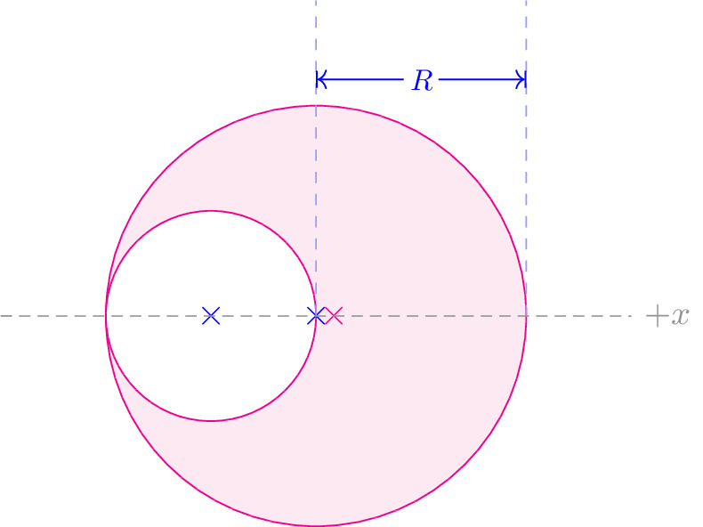

pre.tex
\documentclass[tikz]{standalone}\input{pre.tex}\begin{document}\begin{tikzpicture}
\draw[magenta, fill=magenta!10] (0,0) circle (2cm);
\draw[magenta, fill=magenta!0] (-1,0) circle (1cm);
\draw (0,0) node[blue]{$\times$};
\draw (-1,0) node[blue]{$\times$};
\draw (1/6,0) node[magenta]{$\times$};
\begin{scope}[yshift=0cm, xshift=0cm]
\lineann[3cm]{0}{2}{$R$};
\end{scope}
\draw[axis] (-3,0) -- (3,0) node [right] {$+x$};
% \draw[magenta, fill=magenta!1] (0,0) circle (2cm);
% \draw[magenta, fill=magenta!10] (-1,1.5) -- ++(0, 0.1) -- ++ (2,0) coordinate (I) -- ++ (0,-0.1) coordinate (II) -- cycle;
% \draw[axis] (-3,-1) -- ++(0,5);
% \draw[axis,->] (0,-1) -- ++(0,5) node[above] {$+x$};
% \hlLabel{-3}{0}{$0$};
% \hlLabel{-3}{3}{$h$};
% \draw[blue,<-] (2,1.6) -- ++ (0,0.3);
% \draw[blue,<-] (2,1.5) -- ++ (0,-0.3);
% \draw[blue] ($(2,1.5)!0.5!(2,1.6)$) node[right, xshift=0.5em] {$dx$};
% \draw[axis] (I) -- ++(1,0);
% \draw[axis] (II) -- ++(1,0);
% \begin{scope}[yshift=1.5cm, xshift=0cm]
% \lineann{0}{1}{$r(x)$};
% \end{scope}
\end{tikzpicture}\end{document}